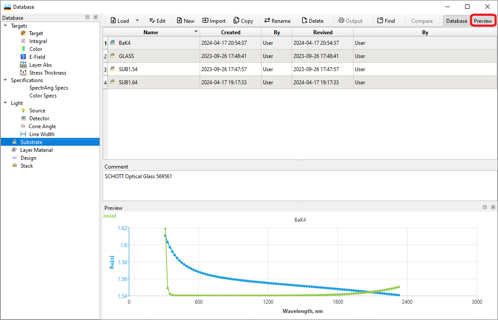

Loading data from OptiLayer database
Loading Data From OptiLayer Databases
Navigation: OptiLayer Menu Commands > Data Menu > Database Access Dialog >
Loading Data From OptiLayer Databases
` <idh_modify_database.html>`__ ` <idh_modify_database.html>`__ ` <idh_database_new_file.html>`__
To access and utilize data stored in OptiLayer databases, the initial step is to load the relevant data into the computer’s memory. To accomplish this for any type of database file, you need to activate the Database Access Dialog. This can be achieved by selecting the appropriate option either from the Data Menu or directly from the OptiLayer Toolbar.

After selecting the necessary data, click the “Load” button. If the data currently residing in the memory have been modified and not saved, you will receive a warning notification. This ensures you have the opportunity to save any changes before they are potentially overwritten by the new data being loaded.

Important Note: In some instances, it may be necessary to utilize the right-click menu of the Database window or the down-arrow button located next to the Load button to access additional loading options. These options may include “Load as Incident Medium,” “Load as Exit Medium,” “Load as Back Side Coating,” among others. This feature allows for more specific and tailored usage of the available data.
You can verify which data is currently loaded into memory by consulting the General Information Window.
If you have made modifications to a Design, Stack, Target, Integral Target, or Color Target file after loading it, you might consider saving these changes. This can be done by using the Save Design and Save Targets options found in the Data menu.